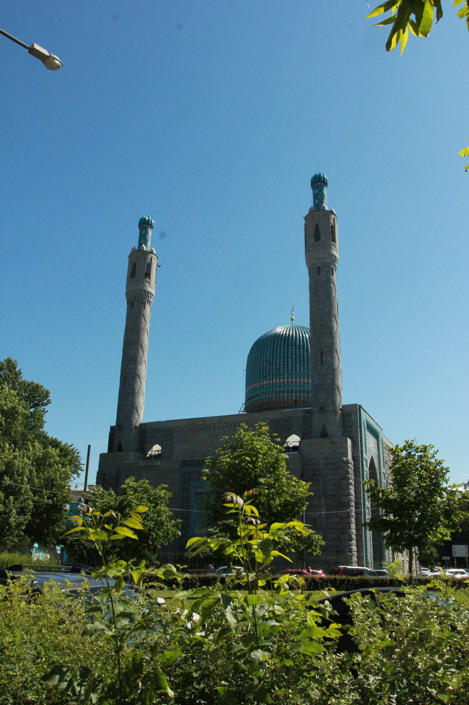
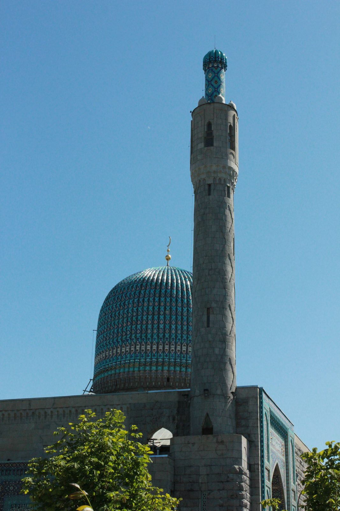
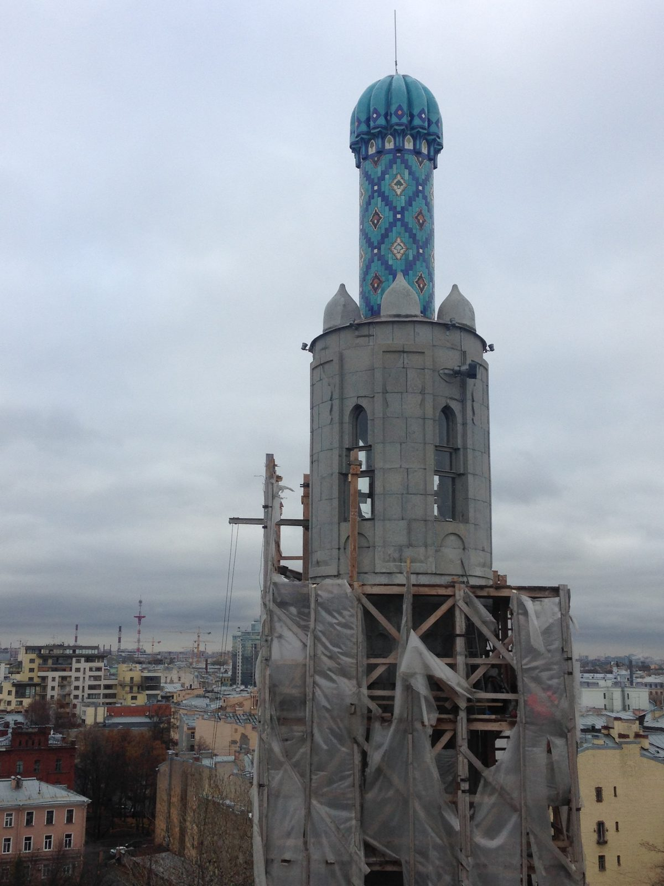

Керамическая облицовка минаретов Санкт-Петербургской Соборной мечети


Купола, минареты и порталы Соборной мечети украсила резная майолика, изготовленная в кикеринской мастерской «Гельдвейн — Ваулин».
Памятник
Проект петербургской Соборной мечети датирован 1909 годом; строительство и отделка продолжались в 1910-е годы, вплоть до 1920-го. Эскизы керамического декора выполнил художник П. М. Максимов после изучения памятников мусульманской архитектуры Средней Азии.
Состояние до реставрации
К началу реставрационных работ завершения минаретов находились в аварийном состоянии. Через трещины в облицовке внутрь конструкции проникала влага, а предусмотренные для её отвода отверстия в мукарнах были забиты цементным раствором. В результате разрушались не только изразцы, но и кирпичное основание под ними.
Обследование и производство
В 2014 году специалисты «Паллады» провели обмеры и технологическое обследование верхних частей минаретов. Сохраняемые элементы облицовки демонтировали и отреставрировали, утраченные детали воссоздали из технического фарфора. Перед установкой купольную облицовку собрали в мастерской, чтобы проверить положение и сопряжение элементов.
Монтаж
Работа с керамикой была увязана с просушкой конструкции, восстановлением основания, вентиляцией и отводом воды. В 2015 году отреставрированные и воссозданные элементы облицовки куполов и оснований минаретов смонтировали на объекте.
Как шли работы

